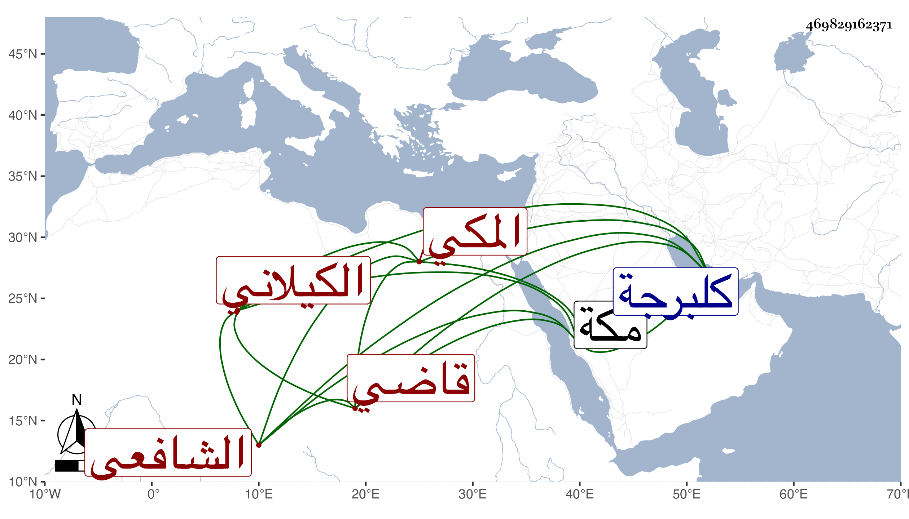

0902Sakhawi.DawLamic.ITO20230111-ara1.EIS1600.469829162371
Biography ID: 469829162371
أحمد بن حسين بن أحمد بن قاوان الشهاب بن الفاضل البدر بن الشهاب الكيلاني المكي الشافعي الآتي أبوه وجده وهو سبط السراج الحنبلي الشريف قاضي الحرمين ويعرف كسلفه بابن قاوان . أخذ عن أبيه وغيره وسمع مني وعلي اليسير بمكة في المجاورة الثالثة وهو شاب ساكن سافر إلى كلبرجة وغيرها ولم يحصل في سفره على طائل لكون عم والده قتل في تلك الأيام بل ضيع قدرا كبيرا في ذهابه وإيابه كان معه لأبيه وسافر بعد موته إلى كهايت فغرق مركبه قبل وصولها ثم دخلها في البر مجردا فسوعد في استرجاع بعض ما كان معه من نقد وغيره ودام بها إلى أن مات فيها أو في غيرها بعيد التسعين عوضه الله الجنة .
